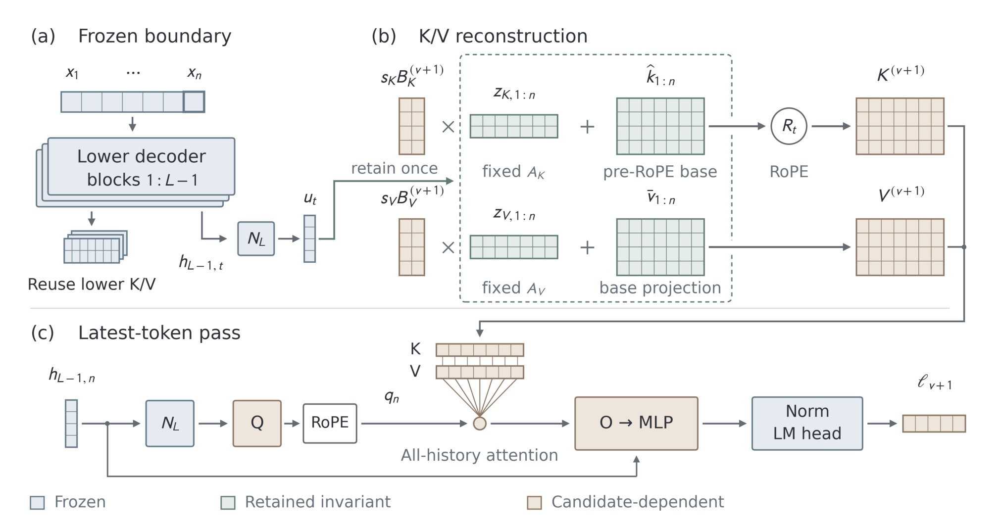
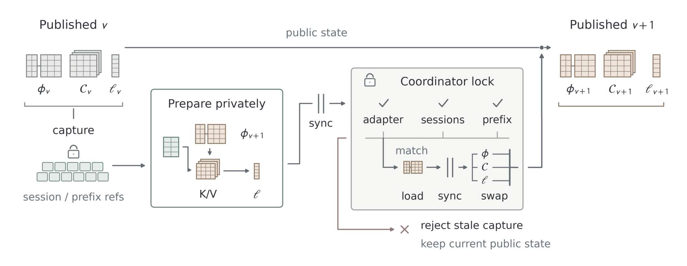
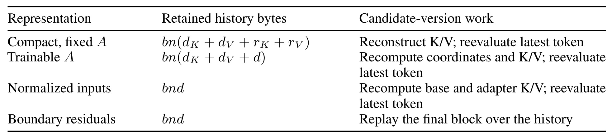
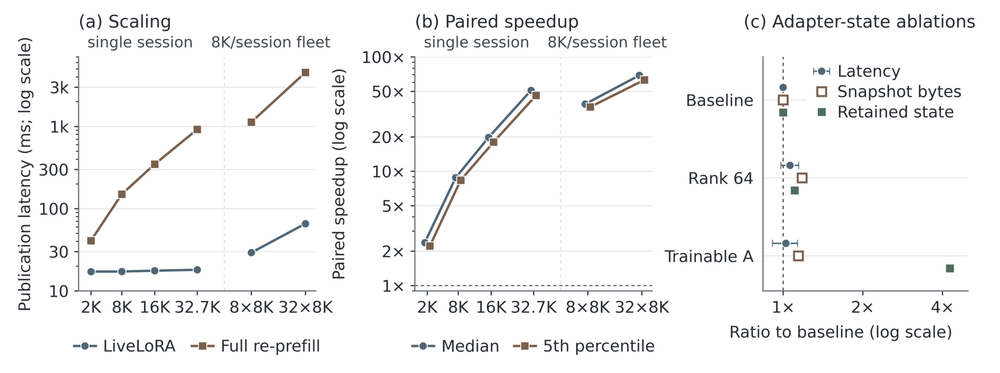
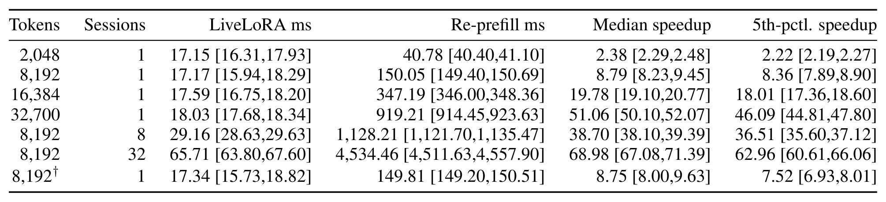
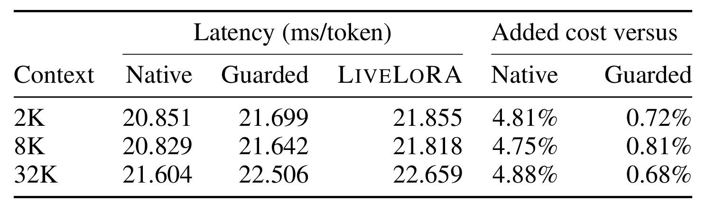
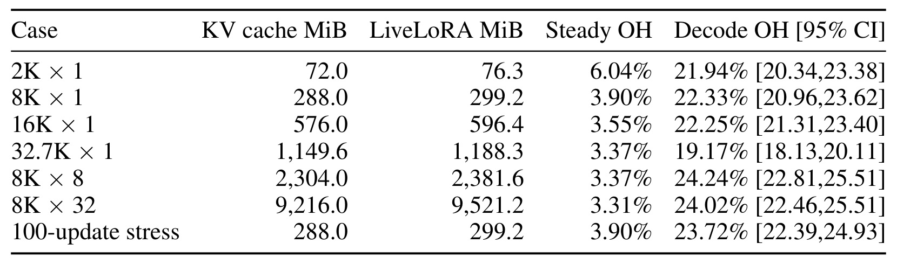
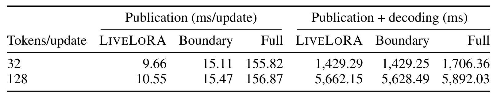
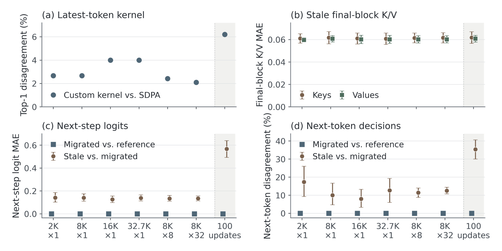
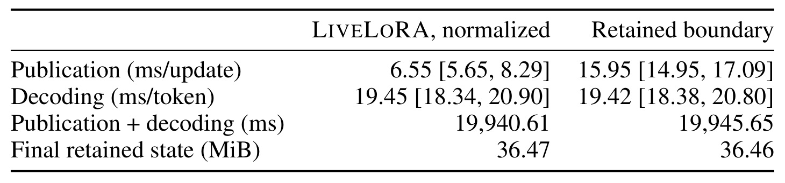

LiveLoRA：跨 LoRA 更新的 KV 缓存迁移
Tianyi Huang 等人把持久会话换版视为模型参数和推理状态的共同提交问题。第一作者 Tianyi Huang 来自 Ryquo，合作作者来自 App-In Club。论文于北京时间 2026 年 11 月 24 日提交 v1，公开公告为 11 月 24 日，当前为预印本，本轮未核验到独立源码。 论文原文
长会话里，使用旧版本算出的键值缓存会让更新后的适配器和历史推理状态混用。每次更新都重新预填充完整历史，又会随着上下文和活跃会话数量增加而变得昂贵。论文要解决的是怎样在保留可见历史的条件下，让新适配器和它应有的推理状态一同生效。
1. 背景和问题
1.1 为什么只替换适配器会产生错误参考
交互系统对话中已经出现的内容有两种表现形式。文本和 token ID 是用户能看到或系统能回放的历史。每一层通过自注意力建立起来的键和值，则是服务器继续计算时真正读取的历史张量。训练可以供给下一版适配器，却不会自动改写已经驻留的这些张量。假设一个会话已经走了八千个位置，排在末尾的下一个查询会读取八千份历史键和值。若直接切换适配器，生成查询的矩阵可能来自新权重，历史各位置投影却来自旧权重。即使这两个版本的形状完全相同、接口也允许缓存被复用，所执行的计算依然会混合两套参数。新旧差异可能先体现在少数 logits 上。遇到两条候选接近的续写，下一 token 的选择有机会改变，后续缓存也随之分叉。
这里的可信参考是用候选权重重算同一份可见前缀。固定前缀意味着录入的历史 token 保持原样，包含老版本已经生成的文本。参考只要求在这些既成 token 上重新计算新版隐状态。从会话开头用新版自由生成一份文本会改变输入，不能用于检验一次换版是否保持状态一致。参考还必须固定注意力掩码与位置元数据。相同 token 放进不同位置索引，会让作用在键和查询上的旋转不同。位置、缓存与参数是同一计算面的三个条件。同样道理，末 token 的输出 logits 也有版本，因为它们由已经计算的最后位置产生。只切到新参数和新 K/V 而继续用上一版 logits 采样，第一次生成仍会用错状态。
全文使用两种相互补充的正确性口径。第一种是模型在精确算术中等价，允许对固定未来序列比较逐位置条件分布。第二种是在具体 GPU 与内核路径下实际对比张量、logits 和 token 决策。半精度下两个参考往往采用不同形状的算子，求和顺序也可能改变，因此发现一个小的数值偏差时应逐层找来源。哪怕有限样本的 greedy 决策完全一致，也只能说明所测轨迹上的判决。反过来，直接把旧 KV 给新 adapter 造成的差异有一个明确的版本错用来源，和实现不同导致的舍入差异要分开检验。
1.2 重放到哪里取决于哪个中间状态仍然相同
完整重放在模型层给出了干净基线，但它会重新算每层的前馈和注意力，还要重设已有的历史缓存。从短交互换成已活跃很久的代理时，本次训练或后台操作已经完成，训练外又要等这个预填充阶段。活跃会话数越多，待重放的 token 总数越大。暂停整段在线服务等待换版会将这一开销集中在一起。只按单次生成耗时评价该系统，会漏掉候选交付到下一条合法生成之间的等待。因此论文把候选 adapter 就绪当作发布计时起点，下一 token logits 准备好当作终点。普通解码时额外采集不变量的成本另计，并且在增长轨迹里把发布与解码相加。
在可以约束可训练层的场景中，整段模型里总能找到某个最早可能变化的点。其前面的输入嵌入、归一化和 decoder 块若冻结，预测同一输入前缀会产生相同的边界残差。保留每个位置的边界残差能让重放从这里开始。此时仍要在可变后缀重新算每个历史位置，此成本在后缀包含多层时仍可能明显。LiveLoRA 把主要方案限定成最后一个 decoder 块，且令最后块 K/V 的低秩下投影固定。两个限制相互配合。第一条确保所有历史位置的末块入口相同，第二条确保从入口投影得到的低秩坐标相同。线上训练可以改变部分末块权重，服务器只要保留事先知道不会变的部分，就能恢复新版权重下应有的历史 K/V。
末块的结构尤其重要。末块早期位置经注意力、输出投影和前馈处理后的表示，不会再输入一个更高的 decoder 层。未来位置只消费这些早期位置的 K/V。这样，较早 token 的末块输出平时已经不再需要，换版时也可跳过它们。当前最后位置还要计算新的 logits，于是只做一次末块全历史注意力扫描，再完成这个位置剩下的算子。若把同样编辑推进较低层，那层输出会影响后来各层输入，重算历史末块输出的论证就失去前提。论文给出这种情况使用可变后缀重放的构造，但主要性能实验并没有覆盖它。
1.3 与共享前缀、保留边界回放的差别
LoRA-FA 本来从训练显存角度固定下投影。论文复用了相同的结构约束，把它当作在线状态压缩的条件。多个适配器通过共享基座减少内存的服务系统也会分离基座和增量，但它们面临的主要问题是不同请求该选择哪份 adapter 和缓存。这篇工作把一个正在生成的会话本身从版本一迁移到版本二，比较的是同一会话的前后状态。前缀共享和跨实例缓存传递可以复用计算，却还得核对权重、上下文和缓存契约能否随换版保持一致。原文还列出保留激活然后恢复缓存、从最早变更块选择性重算、或者在换版后将旧缓存作废并重新预填充几条路线。哪一条合适受可改模型范围、已有缓存实现、服务延迟目标和更新频率共同影响。
边界回放是实际最值得比较的一档。它会保留末块之前的残差，因此比重算整个模型更有竞争力。LiveLoRA 若只证明比全量预填充快，很难回答额外状态是否划得来。论文将两种模型放在同一协调协议内，比较存多少、每次发布做多少、平均续写额外付多少。针对小模型与单张卡的实验，紧凑表示的空间低于完整边界残差，发布也更快。但若某次候选要等之后几百个 token 才更新，普通每步新增开销就有更多时间累积。一项运行时改造还涉及额外历史的生命周期、会话被回收的时点、同步边界以及被拒发布的重试策略。把这些消耗分到会话和版本层，才看得出单次发布收益会在什么业务频率下转化为用户等待和容量收益。
研究动机来自在线 Agent 学习和动态评估。实验刻意把学习算法从状态迁移中剥离，向各方案送相同的候选更新。这使系统成本可以配对对照，也留下一个重要问题：固定下投影且只训练最后块，能否承担真实学习任务所需的适配能力。即使这个学习家庭在业务上可行，也仍须区分生成响应的一般正确性和换版时的版本合同。前者取决于任务训练，后者可以先用受控新旧参数和已知前缀做张量验证。在观察解释上，参数生成、系统发布、面向任务的适配效果形成依次相连的三段。
2. 方法
2.1 末块适配与版本状态
更新的对象是适配器、缓存和下一 token 分数的一组状态。先用完整前缀在版本 $v$ 的模型上执行 prefill，可以定义论文式 (1) 的参考。
符号解释： $x_{1:n}$ 是已确定的前缀，$\phi_v$ 是第 $v$ 版适配器，$C_v$ 是所有层的历史 KV，$\ell_v$ 是同一版本与前缀下的下一 token logits。星号表示完整预填充参考。换版须在前缀不变时将三个值共同更新到下一版。论文只允许可变投影进入末块，嵌入、前面各块、归一化和输出头都冻结。于是式 (2) 至 (4) 写出一个相同入口和两条不同的末块 K/V 路径。
符号解释： $h_{L-1,t}$ 是冻结低层输出到第 $L$ 块的残差，$N_L$ 归一化后得到第 $t$ 个位置的 $u_t$。$W_K,W_V$ 是冻结基座投影，$b_K,b_V$ 是对应偏置，$A_K,A_V$ 是两条固定下投影，$B_K^{(v)},B_V^{(v)}$ 是随版本变化的上投影，$s_K,s_V$ 是各自缩放，$R_t$ 按原来的位置元数据旋转键。$k_t^{(v)}$ 与 $v_t^{(v)}$ 分别是该位置新版键和值。$d_K,d_V$ 为各自聚合宽度，$r_K,r_V$ 为低秩坐标宽度。这组形状中，固定下投影把宽入口压到低维坐标，上投影再变为覆盖所有 KV 头的宽度。Q、O 和 MLP 仍可用普通 LoRA，因为它们的历史输出不再作为任何更高块的输入。
2.2 从不变坐标重建末块缓存
论文用捕获、重建和续算三个阶段表示式 (5) 到 (7)。每个位置首次计算时，另外保存两路基础投影和两路低秩坐标。发布时沿历史维做适合批量矩阵乘积的重建。计算始终拿不可变的底量和候选版本上投影，不逐版本在已写回的 KV 上累积增量。

Figure 1 左上从同一可见历史走过冻结低层，把低层已经存在的键值原样保留。浅绿色四条状态分别来自基础键值投影和固定下投影。这几份张量有位置索引，计算时已得到的原始键基量还未做旋转。右上在同一历史位置上用候选的上投影乘低秩坐标，将增量加回该位置的基量，再将键旋转到原本的位置上。值路径没有位置旋转。这里若把旧缓存里已经旋转的基础键与旋转前的候选增量直接相加，两项就在不同坐标系，会破坏图中的重建关系。左下只读最近位置的低层残差，沿新 Q 投影和位置旋转查阅全历史的新末块 KV。这个位置还依次经过候选的输出投影、残差和前馈。最后，冻结的归一化与语言模型头给出下一步 logits。图中橙色单元表示依赖候选版本的部分，浅绿表示只需初次捕获的状态，蓝色对应被冻结或复用的计算。图里的全历史注意力箭头也限定了成本理解：新版没有逐位置执行整个末块，单新查询仍须读整段历史。对很长或分散存储的缓存，注意力读、拼接历史和搬运可能成为新的等待项。需要把这些操作与低秩矩阵乘积各自计时，才能理解长上下文下发布曲线的变化。单个 token 保存四份坐标并持续追加，它们与供当前解码读的常规缓存并存。图中两条历史箭头并未取走旧 KV 给候选计算，而是从同一条冻结路径复制或者复用可共享部分。这个区别让准备失败时可以释放尚未公开的候选张量，旧版本依然能用原来的一套缓存返回结果，也让同一前缀上的多次更新不用交换可复用历史。
符号解释： $\widehat k_t$ 是旋转前的基础键投影，$\overline v_t$ 是基础值投影，$z_{K,t},z_{V,t}$ 是四份保留状态中两个低秩坐标，$v'$ 是待安装的版本。保存四份状态后，恢复候选缓存时只需改变 $B_K^{(v')}$ 与 $B_V^{(v')}$，投影缩放与位置沿用参考模型。最新位置的低层残差同时作为最后 token 重新计算的入口。保存的是新版本逐次可复用的坐标，所以两次连续换版也可以分别从同一份基量生成，而不需要接受上一次写回的舍入误差。
2.3 版本化提交与失败原子性
训练副本从服务侧在协调锁内复制参数和读取冻结边界，真正优化在锁外进行。发布准备从当前版本、会话集合与不可变前缀引用开始。生成候选缓存和 logits 可以在协作锁外完成，其结果仍属于私有状态，正式服务继续用此前公开的适配器与缓存。

Figure 2 顶上的横线表示对读侧仍然可见的旧三元组。左边抓取参数版本、会话以及对应前缀引用时持锁，随后把候选适配器和输入所在的不变快照交给私下准备块。重建的 KV 和 logits 必须先完成设备同步，右边才能进入协调锁核对旧 adapter、会话集合和前缀引用。只要有一个前缀已在继续生成时被增长，私有候选就不再覆盖当前上下文，图中下方分支会拒绝它并保留已经公开的状态。匹配时按图中的 load、sync、swap 顺序，把候选权重、所有候选会话张量和新 logits 变为同一版，读侧经同一协调器看到它们。看这张图还要注意设备和主机上的同步点是两层保障：主机保护防止在核对与交换中插入别的操作，设备同步确保被交换的张量对应的 GPU 计算已就绪。作者实现的 CUDA 工作使用默认流，计时也按串行执行理解。锁外准备给出前缀核对的机会，但论文没有把 GPU 上异步重叠当成速度来源。该流程覆盖进程内、提交前的失败原子性。持久日志、掉电恢复或跨节点两阶段切换都需要额外设计。参考回放方案在同一个协议下持锁完成候选装载和回放，如果准备抛错会恢复先前适配器，保留会话引用。在线上重试时，要跟踪捕获时和提交时的版本以及 token 数；仅验证会话标识相同不能证明其历史没更新。若多个候选争用，两个候选可以在相同旧状态上完成私有准备，随后只有先通过校验并完成交换的一份仍以该状态为合法基线。后来者需要重新捕获并准备。图里按顺序核对三个条件提供了用日志诊断该现象的方法。
2.4 等价性与保留边界
等价证明先固定前缀、注意力掩码和位置。由于低层冻结，所有位置的边界状态相同；将上式四个不变量代回候选键和值，得到恰好同候选完整 forward 相同的表达式。最后位置在候选 Q、O 和前馈下接收相同历史键值与边界输入，输出条件分布相同。未来第一个位置又在相同 token、掩码、位置和已有 KV 上计算，同理可逐步归纳。归纳利用逐层 KV 是唯一跨 token 隐状态，且推理计算确定。如果其他类型的跨步状态也随可变参数改变，就要将它一起作为迁移证明的对象。采样路径的相等还要求用耦合的随机变量，有限精度的 kernel 观察单独见实验。
符号解释： $n$ 是单会话历史长度，$n_s$ 是第 $s$ 个会话的长度，$m$ 是会话数，$b$ 是每个标量的字节数。$T_{\rm rebuild}$ 只计算 K/V 恢复的乘积规模。$M_{\rm mig}$ 是迁移表示主导字节，$M_{\rm KV}$ 是普通缓存，$M_{\rm desc}$、$M_{\rm res}$、$M_{\rm logits}$、$M_{\rm snapshot}$ 分别为元数据、最近残差、分数和服务适配器快照。首行以外还要考虑全历史注意力扫描和装载。最后一行是账面稳定状态，提交时旧状态还可被读侧使用，候选缓存及汇集工作区会同时存在，因此这条式子未覆盖设备分配峰值。

Table 1 第一列分别列紧凑固定下投影、可训练下投影、归一化输入和边界残差。右列从仅重建 KV 和最后位置，到重算新的低秩坐标，再到从完整入口重算基座投影，最后变为整段末块回放。训练下投影的消融保留基础投影和归一化输入，候选下投影改变后仍能从输入求新坐标，但中间态宽度由低秩之和变为模型宽度。只保留归一化输入时，空间列与边界残差都写成每位置一个宽向量，发布工作却不同。前者用归一化输入批量计算 K/V，只对最后位置执行全注意力及后续网络，后者留的是归一化之前的残差，并让候选末块对每个位置重新执行。两行账面字节相同不表示额外计算完全一样。若入口不变的层更早，可以引用相同思想留存其前边界，但可变后缀的每一层都需要重新消耗前一层各位置的输出。表里的空间也都应叠加普通 KV 和最近 token 状态，不能用第一行代替服务内存预算。选择记录哪种状态，实际上是在稳态写入、候选重建和支持哪类参数编辑之间作取舍。
3. 实验结果
3.1 原版固定历史发布
论文在单张 NVIDIA H200 上测试 Qwen2.5-3B-Instruct。末块 Q、O 与 MLP 的 LoRA 为秩八、调整系数十六；两条 KV 的固定下投影主设置为秩三十二、缩放一。输入布局是单会话不补齐序列，掩码全一，位置从零连续增加，禁用滑窗注意力和 RoPE scaling。多会话数据点来自一组会话对象，完整预填充参考则以等长密集批次执行。各发布方案收相同的非零高斯候选权重。固定随机 token 的原版协议有五个种子，每次普通运行测三十个配对更新，压力行测一百次。按先重采样运行再重采样运行内配对样本的办法构造区间。原版发表延迟从候选就绪到下一个 logits 完成，迁移包含持锁提交，重预填充参考没有包含参考状态安装。这个差别与使用的旧版自定义最后位置内核需要随延迟一同记住。

Figure 3 左面的横轴分成两组。单会话系列增长每条历史的长度，队列系列固定每条八千，增加同一轮待迁移的会话数。纵轴为对数刻度的毫秒数。单会话从两千增到三万二千七百，迁移曲线从约十七到十八毫秒，完整重放由四十余毫秒增加到九百余毫秒。多会话系列的迁移本身也由约二十九毫秒增到约六十六毫秒，说明它仍受保留状态数量、设备同步和最后位置扫描的影响。中图用每次同候选的重放耗时除迁移耗时，再把运行内中位与第五百分位画成两条线。第五百分位反映配对提速偏小的一侧，不能当作服务的延迟尾分位。右图固定一个八千 token 会话，用固定下投影秩三十二为单位，除掉基线后的相对时间、快照大小和保留量使用不同符号。增加秩到六十四，保留状态约增一成，发布时间的区间仍覆盖一；允许更新下投影，所需保留状态升为四点二七倍。用这些数据可以判断同一不变边界编码的代价，却无法从右图得出某种适配器在业务上学习更好。图上两个规模分组也不该拟合成一条单变量指数曲线，因为同时持有更多会话和拉长单条历史走过不同的内存及调度路径。跨组由此得到的比较只限于这些固定长度和这份执行器。右图中快照字节和完整会话缓存是不同计量对象，固定范围更新的参数快照并不随会话历史长度增长，保留坐标则按历史长度增加。若把延迟误差条当成保留状态的误差，同一张图也会读出错误的容量结论。

Table 4 是上述曲线各点的原始数值。三万二千七百个 token 的单会话，迁移与全量重放分别为 18.03 ms 和 919.21 ms，配对中位提速 51.06 倍，区间为 50.10 到 52.07。三十二个八千一百九十二 token 的会话对应 65.71 ms 和 4,534.46 ms，配对中位提速 68.98 倍，区间是 67.08 到 71.39，该行的配对第五百分位提速为 62.96 倍。比值列先在配对样本中计算，再做运行内与跨运行汇总。即使直接拿两列延迟摘要相除近似同一数值，所得数字也不是该统计量。尾部带标志的行在同一八千单会话条件下把测量延长到一百次更新，迁移约 17.34 ms，配对提速中位 8.75 倍。该行主要增加更新重复数，模型、序列和会话数并未变成真实生产队列。五个种子的区间为这份测试的运行内外变化提供参考，无法覆盖不同设备、流量分布或采用分页 KV 时的尾部成本。完整重放参考还省略了安装参考状态，较新的表三才对齐双方提交手段。同时观察八千单条到八条等长时，完整重放耗时从 150.05 增至 1,128.21 ms，迁移从 17.17 增至 29.16 ms。固定单会话与等长批比较具有明确前提，混合长度可能增加补齐、缓存整理和调度压力。用这张表为容量规划提供起点时，先把活跃数和每个会话的可用历史分布列出来，再判断哪类表行有参考价值。
3.2 同保护条件下的稳态解码
增长前缀方案改用模型原生 SDPA 执行最后 token。常规解码将捕获的历史增量写成不可变块，发布时才拼接整段，降低常态每步重复复制的开销。控制组区分没有保护的原生缓存解码，以及使用与迁移相同的协调器保护但无需记录迁移坐标的直接解码。三个种子均先预热八个 token，再测四十八个；数值诊断和快照比对在计时之外执行。

Table 2 的前半有三列绝对时长，后半分别除以没有保护和已有保护的基线。八千历史的原生、受保护直接解码和迁移路径分别是 20.829、21.642 和 21.818 毫秒每 token。采用原生路径作分母，整个服务方案多 4.75%；采用同协调保护作分母，迁移捕获所增加的幅度缩到 0.81%。两千和三万二千的相对原生开销为 4.81% 与 4.88%，同保护口径为 0.72% 与 0.68%。说明基线保护本身在这套实现里有可见成本。用这两列估算吞吐时，应根据自己的服务已有功能选择比较基线。已经进行前缀、所有权和元数据核对的系统，更接近中间列；尚未提供这些服务合同的裸缓存执行，才接近第一列。三种时长共享测量单位与这组权重，能估计内部差值，但并未包括初始 prefill、候选训练或真实流量排队。论文报告这组结果为三个等权种子的均值，种子范围属于描述统计。很小的相对幅度可能受主机时差和 GPU 顺序影响，需要在同一个目标运行时用随机交替或追加种子复验。实践中还应把前缀数据与所需张量的追加、查看前缀是否失效的比较及运行时持锁分开埋点，才能找出基线保护已付的时间中有多少可以与业务框架已有状态复用。
新版微基准和原始固定历史实验分别使用不同实现时期与协议。原论文还保留旧版的稳态记账和解码成本，这是理解多个数字来源的补充证据。

Table 5 左半比较普通 KV 容量和旧版把迁移相关张量加进去的稳定态容量。两千 token 的一个会话从 72.0 变成 76.3 MiB，按未四舍五入的字节数计增加 6.04%；八千单会话从 288.0 到 299.2 MiB，增加 3.90%。同为八千的三十二会话扩大到 9,216.0 与 9,521.2 MiB，稳定态相对增加 3.31%。小会话相对占比更大与固定快照、最近层输出等开销被较小的基础池除有关。右侧旧版解码开销在所列形状里介于 19.17% 和 24.24%，来自对两十个缓存解码步的运行内中位超额耗时统计。新版表二的数值来自另一套模型运行协议和状态组织，可以在自己的组内解释。不能将两张表的百分数直接相减，宣称已经隔离测出某处优化贡献。稳定态内存公式也没有计入切换期间候选缓存、临时拼接空间及调用者仍持有的候选副本。从设备容量规划来看，左半是逻辑分配下界，右半是特定旧实现的时间观察。如果发布被个别长会话卡住，实际显存稀缺还受并存的候选缓存生存时间影响，静态百分比不会展示瞬时排队期间的占用。应分开报告每会话字节和整个进程的峰值。
3.3 用总时间选择发布策略
配对增长轨迹起点是一段八千左右的既有历史。各策略用相同的固定候选和从参考选出的续写 token，经过同一提交锁与安装校验。两个测量发布之间分别安排每次三十二或一百二十八个 token，总列累加两次发布与六十四或二百五十六个 token 的正常继续。相同固定输入保证路径没有因为前一次生成决策不同而提前分叉。

Table 3 左侧是每次发布的平均毫秒数，右侧是两轮累计发布加解码，列组各有紧凑迁移、边界回放、全量回放。间隔三十二时，迁移发布 9.66 ms、边界回放 15.11 ms、全量回放 155.82 ms。把这两轮续写计入后，迁移和边界回放分别是 1,429.29 和 1,429.25 ms，几乎一样；相比全量回放的 1,706.36 ms 则节省 16.24%。把间隔改为一百二十八，单次发布依然领先，三者分别为 10.55、15.47、156.87 ms，但总耗时转为 5,662.15、5,628.49 和 5,892.03 ms。此处相对全量回放省 3.90%，比边界回放慢约三十四毫秒，仍在两者 0.60% 差距内。差别意味着在紧凑迁移每步有小额采集成本时，发布之间累积的步数越多，越可能吃掉单次发布的速度优势。额外持久会话状态约 9.481 MiB 对 32.415 MiB 的比较仍对紧凑方案有利。评估要同时分配内存和时间，因为总耗时接近时，更小的状态有机会容纳更多会话。三点四二倍是额外状态两者相除，不能直接换成包含所有 KV 的设备总容量比。论文附录给出最终八千五百七十六个位置时的对应值 9.912 和 33.921 MiB，另外拼接紧凑历史需要 9.422 MiB 工作区。临时空间如何在多个候选之间复用，需要绑定应用的发布并发测量。表中不含最初预填充、训练和诊断，也未给线上候选实际间隔分布。这个对照提供的是局部运行组合的敏感性。这组对照的适配器候选事先提供，所有方法收到相同的更新。测试把更新后的采样选择固定为特定参考选出的 token，尽可能保证两种路径在相同计算规模上累计耗时。如果候选的获取时间依赖服务模型的实际回答，应用寿命内的实际更新率会跟模型表现相互作用，需要另外加入训练与交互等待。现有表只在应用自行供给候选的设置下比较执行路径。
作者把局部选择写成发布固定成本加逐步解码成本。
符号解释： $N$ 是候选之间的生成 token 数，$j$ 是某条策略，$P_j$ 为每次发布固定成本，$d_j$ 为平均单步解码成本，$M$ 表迁移而 $R$ 表待比的回放。右式是迁移的总时间小于回放的条件。左边为每次发布节约，右边为这段时间采集导致的附加成本。在作者这个八千配置中估计与全量回放的收支交点约六百 token，与边界回放约三十 token。两个点都是从同套测量得到的线性近似，受到上下文成长、算子读写、测量变化和更新频率影响。若最终瓶颈是可容纳的活跃历史数，时间差也不能独占决策。
3.4 数值精度与陈旧缓存反证
论文把相同候选的参考执行分成独立密集 prefill、该 prefill 缓存接着做普通续写、以及共享冻结低层状态的末块边界回放。另对照错误的旧版本缓存。控制参考选出的下一 token 后，才在同一输入上检查各路径 logits，避免不同 token 本身导致的后续状态偏差。

Figure 4 左上比较原版自定义最新 token 内核和参考 SDPA 的 top-1 不一致，普通规模点约 2.1% 到 4.0%，一百更新压力点约 6.2%。右上直接测沿用旧版本时的末块 K/V 平均误差，六个普通形状和压力形状都有明确偏差。该原版路径在同候选迁移完成后，与独立重放的末块键值实际观察到零最大误差，因此左上差异可以定位到最新位置内核执行。左下与右下再让迁移与参考都用 SDPA 处理参考选定的同一个 token，两个方向所比 logits 和所选 token 在该组测试重合；换成陈旧缓存则分别出现误差和决策差别。右下普通形状的贪心判决不一致为 8.0% 到 17.3%，压力行是 35.4%，区间 30.0% 到 40.6%。灰色区域仅用于标出一百次更新的分组，不能将其解释为更新频率越快就必定按该幅度损坏业务质量。图中的四个面板使用三种不同纵轴，旧值与迁移值之差也不是模型部署的速度参照。用相同内核做一次诊断能帮助定位缓存重建是否正确，仍需在完整实际路径比较最终分布、贪心和采样。尤其遇到极接近的 logits，统计出最大误差和 token 一致率要一起读。旧内核对照的各组有限精度结果同证明在精确算术所承诺的条件分布等价分别成立。比如同批量参考下验证某一组键与值完全一致时，关闭候选发布没有办法修复自定义内核对 logits 的影响。应切换到相同注意力算子重测；若此时两种工具路径一致，再交替传入新缓存和旧缓存，检查差异是否改随缓存来源变化。这里将四个可控因子分拆，比硬调误差容忍阈值更能定性机制。
修订版增长轨迹又给出更严格的有限精度对照。BF16 下，同边界回放比较，所有测试贪心 token 一致，低层 KV 一致，末块键和值最大差各 0.03125。发布和续写 logits 最大偏差分别 0.125 和 0.25。若换成独立密集重放缓存的续写，三十二和一百二十八间隔相应最大 logits 差为 1.1875 和 5.59375，所测贪心仍没有分歧。普通缓存执行相比新做密集计算也有数值误差，说明以密集参考评估需同时标明精度与算子形态。另一个较早的 FP32 控制只有一条八千历史、三次发布和二十四个公共 token。迁移与边界回放的最大 logits 差在发布时为约 2.43 乘十的负五次，继续生成时约 7.63 乘十的负六次；该控制与最新 BF16 性能测试分开记。主文和附录均未给出 BF16 下分布逐位一致的保证。
3.5 归一化输入与补充对照
只留归一化后的末块输入可以支持更自由的 KV 下投影。该保留方式从归一化的向量重算 K/V，能避免逐位置重新运行末块其余操作。论文在另一套运行时修订与 GPU 分配下，将它和末块边界残差回放对照，用一个构造的八千一百九十二 token 工具轨迹起步，预热八个 token，每次发布接二百五十六个 token，共四次发布。

Table 6 报三个种子的均值和种子范围。归一化输入迁移约每次 6.55 ms，边界回放约 15.95 ms；解码则是每 token 19.45 对 19.42 ms。累加四次发布与一千零二十四个固定续写后，两者都约为 19.94 秒，迁移和回放分别为 19,940.61 与 19,945.65 ms。论文给出种子配对节约的范围从负五十九点三二到正五十八点三六毫秒，两种子偏迁移，另一个偏回放，不宜用均值几毫秒的差额判定稳定优势。末端额外持久状态分别是 36.47 和 36.46 MiB，后续发布还要为归一化历史物化预留约 36.03 MiB。两方案比照这一组时消耗的工作不同，持久内存却接近。十二次发布和三千零七十二次继续比较的贪心选择一致仍伴随非零的末块 KV 与 logits 偏差。切换到支持可训练下投影的保留方式后，需要重新审核容量与时间，不能套用紧凑固定下投影的三点四二倍存储优势。该独立试验对照的是边界回放，既没有加入完整重放计时，也没有在完全相同的运行时对紧凑版进行交叉对照。发布相对更快可以在表内核验，总耗时几乎持平也只对应这种频率和条件。表内两种输入表示的模型维度相同，因此固定输入长度时账面字节接近。相比之下，图三中的可训练 A 消融还保留了两路基础投影，是另一种方案。把二者都简称为“支持可训练 A”容易错估日常写入。归一化输入方案可以少存基础量，代价是每次发布重新计算它们。
4. 总结
4.1 适配边界应与服务契约一起选择
LiveLoRA 给持久会话换版提供了两个能清楚核对的条件。第一是知道哪些历史值在允许的模型更新范围内保持不变，再从它们恢复候选缓存。第二是更新提交需要同时交付适配器、缓存和第一个将被消费的 logits。若服务在准备阶段允许会话继续前进，则要检查正在准备的状态对应哪一份前缀。如果输入到达、缓存逐出或会话迁移让当前状态离开该前缀，就应记录拒绝原因，并按实际新状态重试。对能共享多个候选版本基础投影的部署，保持不可变记录还有利于把失败和性能问题追溯到某次更新。在实验环境里，紧凑记录能大幅缩短全量重放相比的发布时间，也能比边界回放少存额外历史。把这两点转成服务选择之前，需要知道实际更新率、显存常驻与峰值、协调带来的普通解码增量。
4.2 局限与后续验证
适配能力是第一项未知。末块、固定 KV 下投影的约束实现了一个小范围等价定理，作者使用合成更新去隔离运行开销，没有展示学习到的真实任务质量。可用同一任务的交互轨迹比较末块固定 A、末块可训练 A 和多层普通 LoRA，保持训练预算、任务评估、数据顺序和回滚条件一致，并记录哪些能力差异需要扩大可变后缀。在某项任务必须改低层时，应该单独计时重放该后缀，并独立核对各层缓存是否按版本重建。
有限精度是第二项边界。作者已在同一参考 token 下比较 KV、logits 和 greedy 行为，之后仍可扩充到带填充、动态位置和不同长度的混合批次，测同 kernel 与正式部署 kernel 的两类对照。对概率采样，需要显式共享随机数并记录概率差值；只统计平均匹配容易漏掉接近决策边界的样本。在模型量化、RoPE 变化或跨节点部署时，先核对参考数学条件是否变化，再决定应观察多长的 rollout 和哪些层的数值。短期可复用的数值验收是四组配对：完整 prefill、边界回放、当前迁移和故意读旧缓存。把观察记录与候选版本、同一位置和注意力掩码一起存下来，才容易分清结构失配、内核差异与状态错用。
内存与原子性是第三项边界。常驻张量公式不等于 allocator 峰值，正式发布期间还会同时出现旧缓存、候选缓存、临时拼接区和设备锁。最好让真实并发序列反复经过前缀增长、会话退出和重试，分别测成功提交、淘汰、前缀变化导致拒绝的比例，记录等待至下一 token 的分位数以及失败时恢复所需的时间。进程内的承诺可作为单实例实现基线，分布式服务需再定义分片确认、租约与回退的完整协议。如果 rollout 会跨部署代，缓存元数据还应含适配器身份、位置策略和保留格式版本，不应把旧格式反序列化到新路径。
最后要按用户看的总时间做测试，而非跨论文照搬峰值。固定候选间隔可以先作为受控扫描，真实生产更新可能有集中到达、稀疏会话与冷启动。建议按会话长度与活跃数分桶，对一个可回滚的小规模影子负载同时记录候选就绪、预校验、设备同步、可读版本切换和正常 token 生成。内存台账区分基础 KV、附加常驻历史、临时工作区，并配合同负载的总时间。这样可以回答何时紧凑迁移值得留更多状态，何时边界回放已足够，以及何时资源紧张需要减少更新频率。论文提供的各组实验是构建这些验证的起点，实际业务价值仍取决于适配质量和更新到达分布。